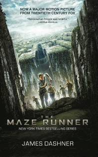
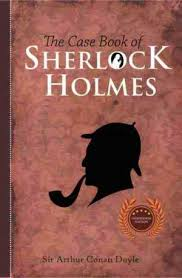
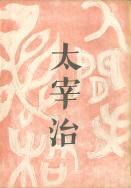

| 1 |
 |
The Maze Runner |
James Dansher |
Adventure, Mystery, Sci-Fi |
Thomas wakes up in a mysterious and enclosed area called the Glade, surrounded by a massive, ever-changing maze. He, along with other boys who have lost their memories, must navigate this maze to find a way out. The maze is filled with dangerous creatures known as Grievers that come out at night. When a girl arrives with a message indicating imminent danger, Thomas becomes determined to uncover the maze's secrets and find a means of escape, revealing critical truths about their situation and themselves in the process. |
| 2 |
 |
The Case Book of Sherlock Holmes |
Sir Arthur Conan Doyle |
Mystery, Thriller, Detective |
The Case-Book of Sherlock Holmes is a collection of the final twelve stories featuring the renowned detective Sherlock Holmes and his loyal friend, Dr. John Watson. These stories showcase some of the most intricate and challenging cases in Holmes' illustrious career. As Holmes tackles a series of complex mysteries, from puzzling murders to deceptive crimes, his extraordinary deductive skills and keen analytical mind come to the forefront. Through his remarkable investigations, Holmes uncovers the truth behind seemingly unsolvable enigmas, highlighting his unparalleled talent for crime-solving and detective work. |
| 3 |
 |
Ningen Shikkaku |
Osamu Dazai |
Dark Fiction |
Ningen Shikkaku (No Longer Human) follows the life of Yozo Oba, a man who feels profoundly disconnected from society and struggles with his sense of identity. The novel is presented through Yozo's personal diaries and fragmented reflections, revealing his deep-seated alienation and emotional turmoil. Yozo's attempts to fit in and lead a normal life repeatedly fail, leading him into a spiral of self-destructive behavior and unhealthy relationships. As he confronts his own inner demons and societal expectations, Yozo grapples with feelings of worthlessness and an enduring sense of being fundamentally different from others. His journey is a harrowing exploration of mental illness, existential despair, and the search for meaning in a world that feels profoundly indifferent. |
| Copyright Maulll |